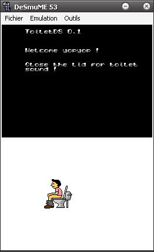

24 septembre 2006
ToiletDS 0.1
Voila, j'ai réalisé mon premier "Homebrew" sur Nintendo DS à l'aide des outils DevKitPro et PAlib .

ToiletDS est vraiment simple : fermez votre Nintendo DS et cela tire la chasse d'eau ! Télécharger ToiletDS 0.1 (le fichier .zip inclu les fichiers .nds, .ds.gba et .sc.nds) Antoine Edit : Grâce à ToiletDS je suis connu dans le monde entier :P : NDSBBS DCemu.co.uk Homebrewhowto DS.qj.net PlayerAdvance.org (Post original) Merci à tous ces sites :P bon allez la prochaine fois j'essaie de faire quelque chose de plus sérieux ;)
Commentaires 1